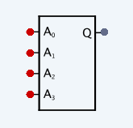
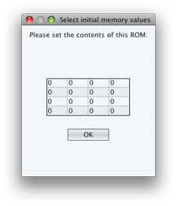
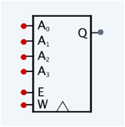

Memory
Delta Circuit Simulator has two
main types of memory built-in: RAM and ROM.
ROM

ROM allows you to preselect its
contents, which cannot be modified after you have added the ROM to your circuit
diagram. Address wires can be attached using A0 to A3.
The output is available on Q.

RAM

RAM can be modified during the execution
of the circuit. It has address wires A0 to A3, output Q
and two additional inputs. W is the value to be written to the cell selected by
the address wires on the next clock tick. There is also a write-enable flag to
control whether the value on W is written or not.